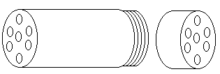
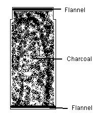
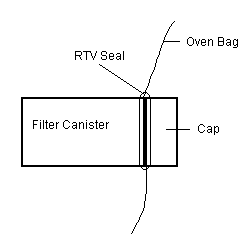
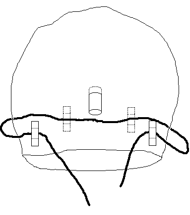

DIY Gas Mask
by
Bill Riley
|
With Tom Ridge drumming up fears of terrorist chemical attacks in America, gas masks have become real hot survival items. Of course, survivalists have stocked such things for years. And you'd think -- especially in the wake of the WTO protests -- that political activists would, too.
Of course, most conventional gas masks have a major drawback for the fury folk among us: they don't seal around beards. A hood is called for. I saw a newspaper article about improvised gas hoods in Iraq, designed for the Kurds. Basically, it was a vinyl hood, with a clear plastic panel to see through, and an activated charcoal filter sewn between layers of cloth and stitched over a bunch holes in the hood. At first glance, it seemed like a good idea, but then I saw a huge problem. When a person wearing such a hood inhales, that soft, flexible hood is going to collapse like a balloon wih the air sucked out. When he exhales, it'll reinflate with the used air. Repeat infinitum. There's going to be very little air flow through the filter. I've seen a better concept in survival gear catalogs, usually billed as an emergency escape hood, to protect the wearer from smoke in a burning building. It's nothing more than a plastic bag with an activated charcoal filter in a canister with a mouthpiece. You draw your breath directly through the filter, avoiding the problem of your "hood" acting as a counterlung. It's pricey, though. I think we can make one of these at home for a lot less. You're going to need:
Any plastic bag that will fit over your head will do, but a heat resistant oven bags makes this useful fires as well as riots. The news report I read claimed that you can "activate" your own charcoal at home by baking ordinary charcoal (with no added started fluids) in your kitchen oven for one hour at 500°C. I don't know about you, but my oven doesn't get anywhere near that hot. If you have a pottery-firing kiln, give that a shot. I bought my activated charcoal at a pet store, in the fish/aquarium department.
Construction  You are going to breathe through these holes, so make as many (and as large) as you can without removing the base completely. Do the same to the cap. 2. Place a circle of flannel in the bottom of the jar. This soft, fuzzy fabric will work as a particulate filter to block some smoke and keep the charcoal from falling through your holes. Fill the jar to the brim with said charcoal. Put another circle of flannel on top of that.  3. You need o fugure out where on the bag to mount your filter. Pull the oven bag over your head just long enough to find a place to put the filter where your mouth can reach it. Please don't smother yourself; I need all the readers I can get. Cut a small hole -- a little smaller tahn the diameter of your filter jar -- in the bag. Stretch that hole over the jar, being careful not to tear the bag. It should seal snugly around the jar-top. Now screw the cap into place. Finish up with a bead of RTV around that joing to thoroughly seal it.  4. Once the RTV has set (or you could do this before mounting the filter canister), attach your drawstring near the bag opening so you'll be able to seal the bag around your neck. You can make little drawstring "belt loops" by cutting strips of duct tape, then covering the middle section of each strip -- on the sticky side -- with smaller squares of duct tape. Place those around the circumference of the bag, and thread your drawstring through.  That's it. You are the proud owner of a gas "mask." To use it, pull the hood over your head, put the end of the canister in your mouth, and tie the drawstring around your neck to seal it. Don't pull it tight enough to restrict any blood flow to your head; you just want to keep stuff like wisps of tear gas from drifting up into your hood.
Advantages and Disadvantages It is "one size fits all." It will fit an adult or child. Check the jar width against a child's mouth first, you may need a smaller jar for very young children. You can use it over a full beard or glasses. And at this price, you can outfit your whole family (or protest group). Size is another factor. You may remember that the mayor of Seattle banned gas masks during the WTO meeting. This hood is small enough to fit unobtrusively in your pocket until needed.
|